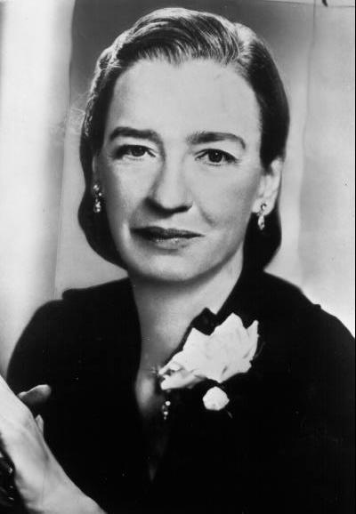

Pessoas Importantes no Desenvolvimento de Sistemas
Donald Knuth
Donald Ervin Knuth (Milwaukee, 10 de janeiro de 1938) é um cientista computacional de renome e professor emérito da Universidade de Stanford. É o autor do livro The Art of Computer Programming, uma das principais referências da ciência da computação. Ele praticamente criou o campo de análise de algoritmos e fez muitas das principais contribuições a vários ramos da teoria da computação. Ele também criou o sistema tipográfico TEX, o sistema de criação de fontes METAFONT, além de ser pioneiro do conceito de programação literária. Finalmente, desenvolveu o conceito de número surreal.
-
Grace Hopper
Grace Murray Hopper (Nova Iorque, 9 de dezembro de 1906 — Condado de Arlington, 1 de janeiro de 1992) foi almirante e analista de sistemas da Marinha dos Estados Unidos nas décadas de 1940 e 1950, criadora da linguagem de programação de alto nível Flow-Matic (em desuso) — base para a criação do COBOL — e uma das primeiras programadoras do computador Harvard Mark I[1] em 1944.
Vint Cerf
Tim Burners Lee
Timothy John Berners-Lee KBE, OM, FRS (TimBL ou TBL) (Londres, 8 de junho de 1955[1]) é um físico britânico, cientista da computação e professor do MIT. É o criador da World Wide Web, tendo feito a primeira proposta para sua criação a 12 de março de 1989.[2][3] Em 25 de dezembro de 1990, com a ajuda de Robert Cailliau e um jovem estudante do CERN, implementou a primeira comunicação bem-sucedida entre um cliente HTTP e o servidor através da internet. Berners-Lee é o diretor do World Wide Web Consortium (W3C), que supervisiona o desenvolvimento continuado da web. Também é o fundador da World Wide Web Foundation e é um pesquisador sênior e titular e fundador da cadeira de 3Com no Laboratório de Inteligência Artificial e Ciência da Computação do MIT (CSAIL).[4] É um diretor da The Web Science Research Initiative (WSRI)[5] e um membro do conselho consultivo do Centro de Inteligência Coletiva do MIT.[6][7] Em abril de 2009, foi eleito como membro da Academia Nacional de Ciências dos Estados Unidos, sediada em Washington, D.C.[8] Em 2011, foi nomeado como um membro do conselho de administração da Fundação Ford.[9] Em 2004, Berners-Lee venceu o Millennium Technology Prize,[10] o que lhe rendeu um milhão de euros.[11] Em 2017 foi agraciado pela Association for Computing Machinery (ACM) com o Prêmio Turing de 2016, considerado o "Nobel da Computação"
Ray Tomlinson
O programador norte-americano implantou o primeiro sistema de e-mail de que se tem notícia, ainda na ARPANET, em 1971. Mesmo primitivo, o serviço já utilizava a @ para separar o nome do usuário da identificação da máquina que estava usando, visto que as mensagens só podiam ser enviadas para pessoas ligadas à mesma rede. O símbolo é usado até hoje, mas para identificar o provedor usado pela pessoa, enquanto o conceito foi apenas ampliado.
Dennis Ritchie
Falecido em 2011, aos 70 anos, o programador criou a linguagem de programação C, entre 1968 e 1973. Uma das mais utilizadas até hoje, a linguagem influenciou o C++ (do Windows), o Java (usado em aplicações do Android), o C#, o JavaScript, o Python e o Objective-C e o Swift, dos sistemas da Apple. Além disso, Ritchie ainda foi um dos principais nomes por trás do UNIX, sistema base de inúmeros outros sistemas operacionais atuais incluindo o Linux, as muitas distribuições do SO de código aberto e o OS X.
-
Linus Torvalds
Linus Benedict Torvalds (Helsínquia, 28 de dezembro de 1969) é um engenheiro de software, nascido na Finlândia e naturalizado estado-unidense em 2010,[1][2] criador, e por muito tempo o desenvolvedor mais importante do núcleo Linux, sendo utilizado em importantes sistemas Linux, Android e Chrome OS. É também o criador do Git, sistema de controle de versão amplamente utilizado, e o aplicativo para planejamento e registro de mergulho, Subsurface.[3] Junto ao médico Shinya Yamanaka, foi honrado pela Academia de Tecnologia da Finlândia, em 2012, com o Prêmio de Tecnologia do Milênio “em reconhecimento à sua criação de um novo núcleo de sistema operacional para computadores, que levou ao extensivamente utilizado, núcleo Linux”.[4] Torvalds também notoriamente recebeu os prêmios: Pioneiro da Computação da IEEE Computer Society,[5] e o IEEE Masaru Ibuka Consumer Electronics Award, patrocinado pela Sony.


Vint Cerf redução de Vinton Gray Cerf (New Haven, 23 de junho de 1943) é um matemático e informático estadunidense. Referenciado como um dos fundadores da Internet, foi em 2005 vice-presidente e "Chief Internet-Evangelist" da Google. Na época de sua contratação, o executivo-chefe da empresa, Eric Schmidt, chegou a dizer que Vinton Cerf era uma das pessoas mais importantes da história ainda vivas. Junto a Robert Kahn, é um dos criadores da Internet, tendo participado da criação dos protocolos TCP/IP, que são o alicerce da conexão à rede. Foi Kahn quem desenvolveu o TCP[1] e Vinton Cerf iniciou o desenvolvimento do IP para transmissão de informações pela Internet, o que foi reconhecido com a publicação do artigo A Protocol for Packet Network Intercommunication